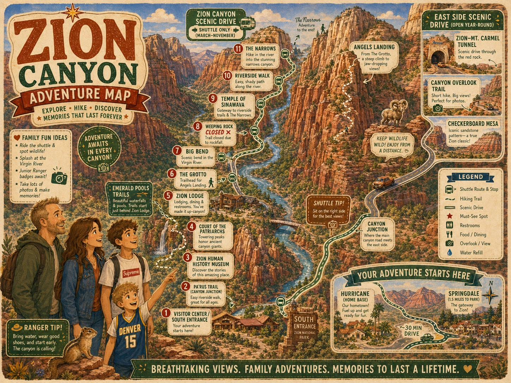
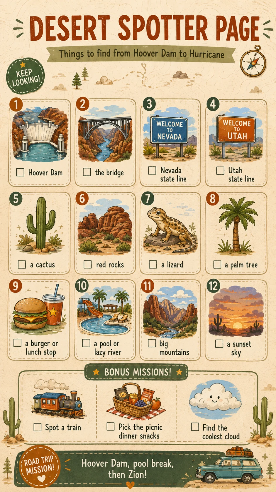
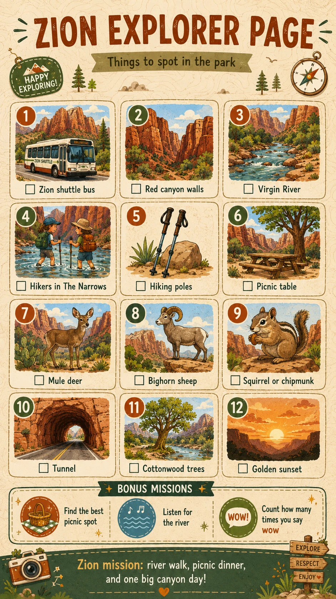

Zion Explorer Map
A field-guide style canyon map for the shuttle day, Narrows planning, wildlife spotting, and the east-side scenic drive.

🥾 Main goal: Riverside Walk / The Narrows if conditions fit
🧺 Picnic idea: The Grotto if shuttle timing works
🏠 Home base: Hurricane condo
🚗 Bonus: Zion–Mt. Carmel Tunnel / Canyon Overlook / Checkerboard Mesa


Narrows Readiness
- Narrows shoes ready
- Walking sticks or poles ready
- Water bottles filled
- Dry clothes packed
- Snacks packed
- River and weather conditions checked
Picnic Dinner Plan
- Best case: Grotto picnic if shuttle timing works.
- Backup: Visitor Center / Pa’rus Trail evening reset.
- Rule: easy, pretty, and no one gets pushed past done.